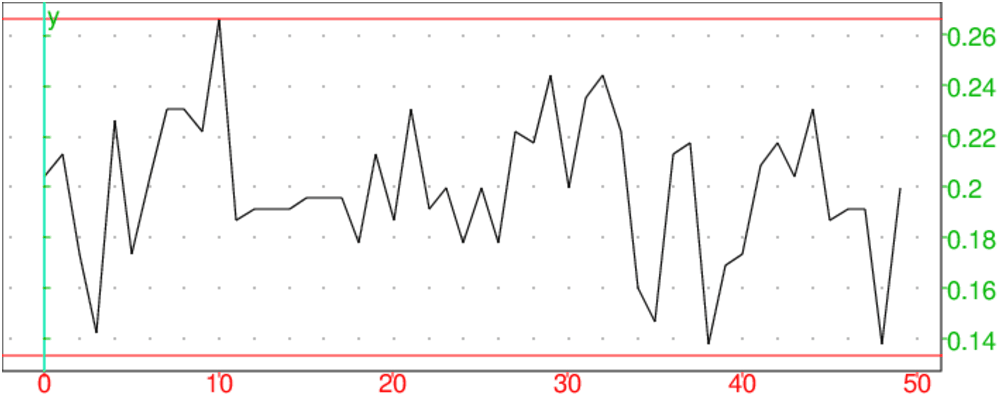
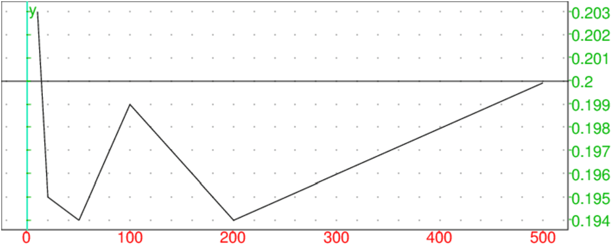
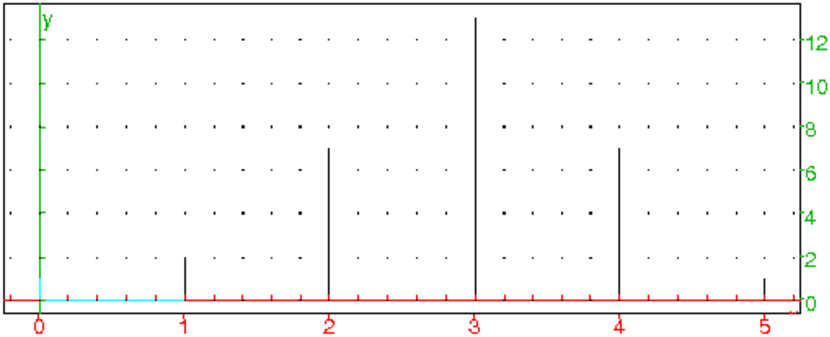
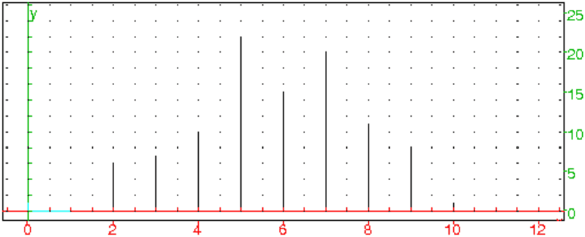
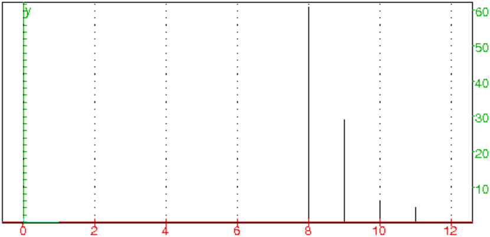
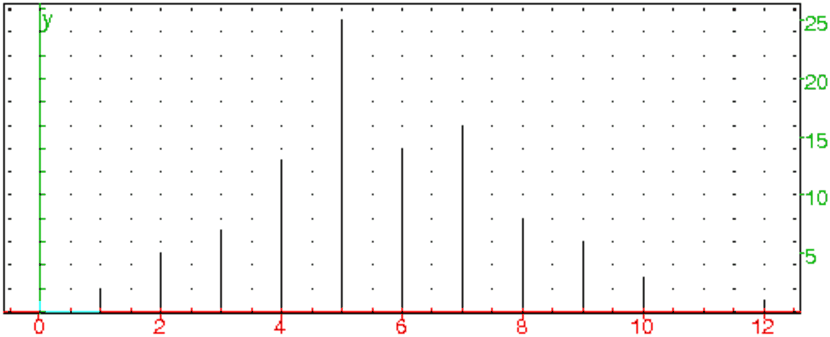
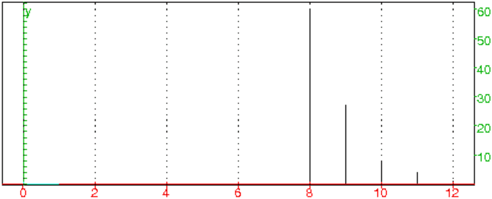

srand() (ou randseed ou RandSeed) sert à
initialiser la suite des nommbres aléatoires que l’on obtient avec
rand() ou avec randnorm().
RandSeed a toujours un argument entier, alors que randseed ou
srand peut ne pas avoir d’arguments (dans ce cas le générateur
aléatoire est intialisé avec l’horloge du système).
On tape :
On obtient par exemple :
Ou on tape :
On obtient par exemple :
Ou on tape :
On obtient par exemple :
rand() renvoie au hasard, de façon équiprobable, un nombre
entier de [0,232[ (232=4294967296).
On tape :
ou on tape
On obtient :
Pour avoir, au hasard, de façon équiprobable, un nombre de [0;1[, on peut donc utiliser :
^32)On obtient :
Mais il est plus simple de taper : rand(0,1) (voir le paragraphe suivant).
Si a et b sont des réels rand(a,b) désigne un nombre décimal
aléatoire compris dans l’intervalle [a;b[.
Donc, rand(a,b) ou (hasard(a,b)) renvoie au hasard, et de façon
équiprobable, un nombre décimal de [a;b[.
Pour avoir, au hasard et de façon équiprobable, un nombre décimal de [0;1[,
on tape :
On obtient :
Pour avoir, au hasard et de façon équiprobable, un nombre décimal de [0;0.5[, on tape :
On obtient :
Pour avoir, au hasard et de façon équiprobable, un nombre décimal de ]−0.5;0], on tape :
ou on tape :
On obtient par exemple :
Si a et b sont des réels rand(a..b) ou alea(a..b) ou
hasard(a..b) désigne une fonction qui est un générateur de nombres aléatoires
compris dans l’intervalle [a;b[.
Donc, rand(a..b)() renvoie au hasard, et de façon équiprobable, un
nombre décimal de [a;b[.
Pour avoir, au hasard et de façon équiprobable, un nombre décimal de [0;1[,
on tape :
On obtient :
Pour avoir, au hasard et de façon équiprobable, plusieurs nombres aléatoires décimaux compris dans l’intervalle [1;2[, on tape :
puis il suffit de taper r().
On tape :
On obtient :
Si n est un entier relatif rand(n) ou hasard(n) renvoie au
hasard, et de façon équiprobable, un entier de [0,1,..,n[
(ou de ]n,..1,0] si n est negatif).
On tape :
Ou on tape :
On obtient :
ou on obtient :
On tape :
Ou on tape :
On obtient :
ou on obtient :
On tape pour avoir un entier aléatoire entre 6 et 10, bornes comprises :
Ou on tape :
On obtient par exemple :
rand a dans ce cas, soit 2, soit 3 arguments.
Si rand a 2 arguments : les arguments sont un entier p et une liste
L alors rand(p,L) renvoie, au hasard, p éléments de la liste
L.
Si rand a 3 arguments : les arguments sont trois entiers
p,min,max alors
rand(p,min,max) renvoie, au hasard, p entiers de
[min,..,max]
On tape :
On obtient :
On tape :
On obtient :
On tape :
On obtient :
Choisir au hasard n nombres selon la loi multinomiale de probabilité P. Cela veut dire qu’on effectue un tirage avec remise de n objets parmi k=size(P) objets. Pour j=0..k-1, l’objet j a la probabilité P[j] dêtre tiré (on doit avoir pour sum(P)=1). On tape :
randmult(n,P):={
local k,j,l,r,X,L;
k:=size(P);
X:=cumsum(P);
si X[k-1]!=1 alors return "erreur"; fsi;
L:=[0$(j=1..k)];
pour j de 1 jusque n faire
r:=alea(0,1);
//afficher(r);
l:=0;
tantque r>X[l] faire
l:=l+1;
ftantque;
L[l]:=L[l]+1
fpour;
return L;
}:;
On tape :
randmult(5,[1/2,1/3,1/6])
On obtient par exemple :
[3,1,0]
ou bien, on utilise la commande Xcas : randvector avec
multinomial comme paramètre
On tape :
randvector(5,multinomial,[1/2,1/3,1/6])
On obtient par exemple :
[3,1,1]
Si on effectue un tirage avec remise de n objets de la liste
C. Si k=size(C), l’objet C[j] a la probabilité P[j]
dêtre tiré pour (j=0..k-1). On doit avoir
k=size(C)=size(P) et sum(P)=1.
Si n==1, on renvoie l’objet qui a été tiré.
Si n!=1, on renvoie la séquence de k listes constituées du nom
des objets et de leur nombre d’apparition.
On tape :
randmultinom(n,P,C):={
local k,j,l,r,X,L;
k:=size(P);
si size(C)!=k alors retourne "erreur"; fsi;
X:=cumsum(P);
si X[k-1]!=1 alors return "erreur"; fsi;
L:=[C[j],0]$(j=0..k-1);
pour j de 1 jusque n faire
r:=alea(0,1);
l:=0;
tantque r>X[l] faire
l:=l+1;
ftantque;
L[l,1]:=L[l,1]+1
fpour;
si n==1 alors return L[l,0];fsi;
return L;
}:;
On tape :
randmultinom(5,[1/2,1/3,1/6],["R","V","B"])
On obtient par exemple :
[["R",2],["V",2],["B",1]]
ou bien, on utilise la commande Xcas : randvector avec
multinomial comme paramètre
On tape :
randvector(5,multinomial,[1/2,1/3,1/6],["R","V","B"])
On obtient dans ce cas la liste des 5 tirages, par exemple :
["R","B","R","R","V"]
On simule le tirage de 1 objet parmi 3 objets de probabilité respective :
P=[1/2,1/3,1/6] en faisant 6000 tirages.
On tape :
randmult(6000,[1/2,1/3,1/6])
On obtient par exemple :
[3026,2009,965]
ou bien, on utilise la commande Xcas : randvector avec
multinomial comme paramètre
On tape :
randvector(6000,multinomial,[1/2,1/3,1/6])
On obtient, par exemple :
[2947,2040,1013]
On écrit le programme qui simule m fois le choix au hasard de n
nombres selon la loi multinomiale de probabilité P et qui compte le
nombre r de fois que l’on a obtenu le tirage K (sum(K)=n) et
qui renvoie r/m c’est à dire une estimation de la probabilité
d’obtenir K. probmult(m,n,P,K) renvoie donc ne estimation de
multinomiale(n,P,K).
On tape :
probmult(m,n,P,K):={
local l,T,r;
r:=0;
pour l de 1 jusque m faire
T:=randmult(n,P);
si T==K alors r:=r+1; fsi;
fpour;
return r/m;
}:;
Exercice Soit une urne ayant 3 boules noires, 2 boules rouges et 1 boule
verte. On tire
avec remise 2 boules de cette urne.
Quelle est la probabilité de tirer une boule rouge et une boule verte ?
On peut simuler le tirage avec remise 2 boules de cette urne avec :
randmult(2,[1/2,1/3,1/6])
qui renvoie par exemple :
[1,0,1]
randmultinom(2,["N","R","V"],[1/2,1/3,1/6])
qui renvoie par exemple :
[["N",1],["R",0],["V",1]]
On simule 6000 fois ce tirage et on tape :
probmult(6000,2,[1/2,1/3,1/6],[0,1,1])
On obtient par exemple :
671/6000
671/6000. ≃ 0.111833333333
On utilise la commande multinomial de Xcasé et on tape :
multinomial(2,[1/2,1/3,1/6],[0,1,1])
On obtient :
1/9
1/9. ≃ 0.111111111111
Exercice
Une urne contient 12 boules rouges et 3 boules vertes.
On se propose de simuler le tirage d’une boule de l’urne puis d’observer la
fluctuation d’échantillonnage sur des échantillons de taille 225.
D’après le contenu de l’urne, la probabilité de tirer une boule verte
est de 1/5=0.2.
Notre simulation est-elle convenable ?
On tape :
L:=[randmultinomial([4/5,1/5],["R","V"])$(j=1..225)]:;
On obtient :
Done
On tape :
count_eq("V",L)
On obtient par exemple :
45
On analyse tout d’abord 50 échantillons de taille 225 pour voir la fluctuation.
On note N le nombre de fois que l’on fait une simulation (une simulation
c’est 225 tirages).
n le nombre de fois que l’on a obtenu une boule verte,
p le pourcentage de boules vertes obtenues par cette simulation,
Lp la séquence des pourcentages obtenues.
On tape :
test0(N):={
local L,p,n,k,Lp;
Lp:=NULL;
pour k de 1 jusque N faire
L:=[randmultinomial([4/5,1/5],["R","V"])$(j=1..225)];
n:=count_eq("V",L)
p:=n/225.;
Lp:=Lp,p;
fpour;
retourne Lp;
}:;
Puis :
plotlist(test0(50)),droite(y=2/15),droite(y=4/15)
On obtient :

On analyse successivement t échantillons de taille n=225 pour,
t∈ 10, 20, 50, 100, 200, 500.
Pour notre problème, l’intervalle de fluctuation au seuil de 95% est :
p−1/√n p+1/√n avec p=1/5 et n=225
c’est à dire 2/15,4/15
Pour savoir si la simulation est corecte on fait un programme pour savoir si
on a bien dans 95% des cas p dans l’intervalle 2/15,4/15
On note N le nombre de fois que l’on fait une simulation (une simulation
c’est 225 tirages).
Pour la k ième simulation, (k=1..N) on note :
L la liste des 225 tirages obtenus,
n le nombre de fois que l’on a obtenu une boule verte,
p le pourcentage de boules vertes obtenues par cette simulation,
l
s le nombre de tirages tels que 2/15<p<4/15 lorsqu’on a fait
k simulations,
sn le nombre de fois que l’on a obtenu une boule verte lorsqu’on a fait
k simulations.
pcn le pourcentage de boules vertes obtenues par ces N*225
tirages est donc sn/(225*N)
Le nombre de fois où on a 2/15<p<4/15 est s. En pourcentage
cela fait donc pc=s/N.
On vérifie alors si pc>0.95
test0(N):={
local s,L,p,n,pc,sn,pcn,k,Le;
s:=0;sn:=0;
Le:=NULL;
pour k de 1 jusque N faire
L:=[randmultinomial([4/5,1/5],["R","V"])$(j=1..225)];
n:=count_eq("V",L)
p:=n/225;
Le:=Le,p;
fpour;
retourne Le;
}:;
test(N):={
local s,L,p,n,pc,sn,pcn,k,Le;
s:=0;sn:=0;
Le:=NULL;
pour k de 1 jusque N faire
L:=[randmultinomial([4/5,1/5],["R","V"])$(j=1..225)];
n:=count_eq("V",L)
p:=n/225;
Le:=Le,p;
si p>2/15 and p<4/15 alors s:=s+1; fsi;
sn:=sn+n;
fpour;
pc:=evalf(s/N);
pcn:=evalf(sn/N/225);
si pc>0.95 alors retourne pcn,pc,"correcte"; sinon retourne pcn,pc,"pas correcte"; fsi;
}:;
On tape :
test(10)
On obtient :
0.203111111111,1.0,"correcte"
On tape :
test(20)
On obtient :
0.194888888889,0.95,"pas correcte"
On tape :
test(50)
On obtient :
0.194311111111,0.98,"correcte"
On tape :
test(100)
On obtient :
0.198888888889,0.97,"correcte"
On tape :
test(200)
On obtient :
0.193777777778,0.99,"correcte"
test(500)
On obtient :
0.19984,0.984,"correcte"
On tape :
plotlist([10,20,50,100,200,500],[0.203,0.195,0.194,0.199,0.1940.1999] ),
droite(y=0.2)
On obtient :

randnorm(m,sigma) ou randNorm(m,sigma) renvoie au hasard
des nombres répartis selon la loi normale de moyenne m et d’écart
type sigma.
On tape :
On obtient par exemple :
ou on obtient par exemple :
On tape :
On obtient par exemple :
randexp(a) renvoie au hasard
des nombres répartis selon la loi exponentielle de paramètre a
positif.
La densité de probabilité est proportionnelle à exp(−a*t) et on a :
Proba(X≤ t)=a∫0texp(−a*u)du.
On tape :
On obtient par exemple :
ou on obtient par exemple :
ranm (ou randmatrix ou randMat) peut avoir comme 1,2 ou 3
arguments :
Une tortue se déplace sur un axe gradué.
Au début de chaque parcours la tortue se trouve à l’origine.
On choisit de la faire avancer en jouant à pile ou face :
pile la tortue reste sur place,
face elle avance d’une unité.
Un parcours aléatoire de la tortue est constitué par 5 tirages aléatoires.
On veut simuler 30 parcours aléatoires et trouver la
probabilité de l’événement : la tortue est arrivée au point d’abscisse
xi pour xi ∈ ℕ.
On note T l’abscisse du point d’arrivée de la tortue.
On écrit le programme parcours, en utilisant rand(2) qui renvoie
de façon équiprobable 0 ou 1.
On considère que 0 correspond à pile et correspond 1 à face.
parcours() :={
local T,r;
T:=0;
// on fait 5 tirages
for (k:=1;k<6;k++){
r:=rand(2);
// la tortue avance si r==1 (tirage = face)
if (r==1){
T:=T+1;
}
}
return(T);
};
Voici les résultats obtenus lorsque l’on fait 10 fois
parcours() ,on tape:
for (k:=1;k<11;k++) parcours()
On obtient par exemple :
4,2,4,1,1,4,3,2,2,1
On note T l’abscisse du point d’arrivée de la tortue et
TA le tableau des résultats : TA[0] represente le nombre de fois
que la tortue est au point 0 à l’arrivée.
On écrit le programme suivant dans l’éditeur de programmes de Xcas
(raccourci Alt+p)
et on sauve ce programme dans le fichier parsim.
parcoursim(n) :={
local T,r,TA,R,j,k;
ClrGraph();
TA:=[0,0,0,0,0,0];
for (j:=1;j<n+1;j++){
T:=0;
for (k:=1;k<6;k++){
r:=rand(2);
if (r==1){
T:=T+1;
}
}
TA[T]:=TA[T]+1;
};
orint(TA);
switch_axes(NULL);
xyztrange(-0.5,5.2,-0.1,16.0,-10.0,10.0,-10.0,-10.0,
-0.5,5.2,-0.1,16.0,1);
R:=segment(0,i*TA[0]);
R:=R,segment(1,1+i*TA[1]);
R:=R,segment(2,2+i*TA[2]);
R:=R,segment(3,3+i*TA[3]);
R:=R,segment(4,4+i*TA[4]);
R:=R,segment(5,5+i*TA[5]);
return R;
};
Attention
Ici parcoursim renvoie une liste de segments et écrit en bleu la valeur de TA.
Le programme se trouve dans un éditeur prg de Xcas, on le teste
avec le bouton OK, puis si on a obtenu //Success compilling,
le programme est validé.
On tape dans la ligne de commande :
parcoursim(30)
On obtient en bleu :
TA:[0,4,14,6,6,0]
et le graphique :

Voici des résultats obtenus pour la liste des abscisses des points
d’arrivée :
pour parcoursim(30) on a trouvé [0,2,7,13,7,1]
pour parcoursim(300) on a trouvé [7,41,94,102,47,9]
pour parcoursim(1000) on a trouvé [36,172,310,306,148,28]
pour parcoursim(10000) on a trouvé [287,1575,3184,3136,1517,301]
Soit l’univers Ω formé par les 5 tirages successifs possibles (chacun
étant équiprobable) :
Ω={{p,p,p,p,p},{p,p,p,p,f},{p,p,p,f,p},...,{f,f,f,f,f,}}.
Ω a 25=32 éléments.
Soit A la variable aléatoire égale à l’abscisse du point d’arrivée.
On a :
P(A=0)=1/25=0.03125 car cela correspond à 5 fois "pile",
P(A=1)=5/25=0.15625 car cela correspond à 4 fois "pile" et 1
fois "face" ce qui peut se produire de 5 façons,
P(A=2)=10/25= 0.3125 car cela correspond à 3 fois "pile" et 2
fois "face" ce qui peut se produire de C52= 10 façons,
P(A=3)=10/25= 0.3125 car cela correspond à 2 fois "pile" et 3
fois "face" ce qui peut se produire de C53= 10 façons,
P(A=4)=5/25=0.15625 car cela correspond à 1 fois "pile" et 4
fois "face" ce qui peut se produire de 5 façons,
P(A=5)=1/25=0.03125 car cela correspond à 5 fois "face".
Au début de chaque parcours la tortue se trouve à l’origine.
On choisit de la faire avancer en jouant à pile ou face :
- pile, la tortue avance d’une unité selon un axe vertical,
- face, elle avance d’une unité selon un axe horizontal.
Un parcours aléatoire de la tortue est constitué par 5 tirages aléatoires.
On veut simuler n parcours aléatoires et trouver la
probabilité de l’évènement : le parcours aléatoire de la tortue se termine au point de coordonnées [x,y] pour (x,y) ∈ N × N
On note X,Y les coordonnées du point d’arrivée de la tortue.
On écrit :
parcours2() :={
local X,Y,r;
X:=0;
Y:=0;
for (k:=1;k<6;k++){
r:=rand(2);
if (r==1){
X:=X+1;
} else {
Y:=Y+1;
}
}
return([X,Y]);
};
Voici les résultats obtenus lorsque l’on fait 10 fois parcours2() :
[2,3],[1,4],[3,2],[4,1],[3,2],[2,3],[1,4],
[1,4],[3,2],[2,3]
On remarque qu’à chaque tirage soit X, soit Y est augmenté
d’une unité donc à chaque tirage X+Y aygmente de 1. Au début
X+Y=0, donc,
au bout de 5 tirages c’est à dire à la dernière étape X+Y=5.
Il suffit donc de connaitre l’abscisse d’arrivée X pour connaitre le
point d’arrivée (point(X,5-X))). Ce problème est donc le même que
le précédent.
On note XA le tableau des résultats selon les abscisses.
On remarquera qu’ici Y ne sert à rien puisqu’on peut repérer le
point d’arrivée seulement à l’aide de son abscisse, elle permet juste de
visualiser le point d’arrivée.
On écrit :
parcoursim2(n) :={
local X,Y,r,j,k,XA;
XA:=[0,0,0,0,0,0];
for (j:=1;j<n+1;j++){
r:=rand(2);
X:=0;
Y:=0;
for (k:=1;k<6;k++){
if (r==1){
X:=X+1;
} else {
Y:=Y+1;
}
r:=rand(2);
}
XA[X]:=XA[X]+1;
}
switch_axes(NULL);
ClrGraph();
xyztrange(-0.5,5.2,-0.1,16.0,-10.0,10.0,-10.0,-10.0,
-0.5,5.2,-0.1,16.0,1);
return([XA,segment(0,i*XA[0]),segment(1,1+i*XA[1]),
segment(2,2+i*XA[2]),segment(3,3+i*XA[3]),
segment(4,4+i*XA[4]),segment(5,5+i*XA[5])]);
};
Voici les résultats obtenus :
pour parcoursim2(30) on a trouvé :
XA=[0,4,9,9,7,1]
pour parcoursim2(300) on a trouvé :
XA=[6,48,91,99,46,10]
pour parcoursim2(1000) on a trouvé :
XA=[26,170,313,320,148,23]
pour parcoursim2(10000) on a trouvé :
XA=[290,1498,3207,3128,1572,305]
Attention
Ici parcoursim2 renvoie une liste de segments : ces segments seront
donc dessinés dans un écran de géométrie et dans l’écran DispG.
Il faut donc écrire ClrGraph() en début de
programme si on veut effacer l’écran de géométrie DispG.
On a donc la même analyse que dans le parcours linéaire.
Soit A la variable aléatoire égale aux coordonnées du point d’arrivée.
P(A=[0,5])=1/25= 0.03125 car cela correspond à 5 fois "pile",
P(A=[1,4])=5/25=0.15625 car cela correspond à 4 fois "pile" et 1
fois "face" ce qui peut se produire de 5 façons,
P(A=[2,3])=10/25=0.3125 car cela correspond à 3 fois "pile" et 2
fois "face" ce qui peut se produire de C52= 10 façons,
P(A=[3,2])=10/25= 0.3125 car cela correspond à 2 fois "pile" et 3
fois "face" ce qui peut se produire de C53= 10 façons,
P(A=[4,1])=5/25=0.15625 car cela correspond à 1 fois "pile" et 4
fois "face" ce qui peut se produire de 5 façons,
P(A=[5,0])=1/25= 0.03125 car cela correspond à 5 fois "face".
On met dans un chapeau trois cartes : une des cartes a deux côtés rouges,
une autre a un côté rouge et un côté blanc et la troisième a deux
côtés blancs.
On tire une carte : le côté que nous voyons est rouge.
Quelle est la probabilité pour que l’autre côté soit blanc ?
Pour écrire le programme de simulation,
on numérote les cartes par 0,1 et 2 et on numérote les faces de chaque
carte par 0 et 1 : par exemple la carte blanche a le numéro 0,
la carte bicolore a le numéro 1, la carte rouge a le numéro 2
et la face blanche de la carte bicolore a le numéro 0.
Puis, on représente donc une carte par un vecteur qui est la couleur de ses
faces :
par exemple la carte bicolore sera représentée par [B,R].
On peut aussi représenter le blanc par 0 et le rouge par 1 :
par exemple la carte bicolore sera représentée par [0,1].
On représente ainsi les cartes par un vecteur de deux composantes 0 ou 1
(0 et 1 désigne la couleur).
La variable C:=[[0,0],[0,1],[1,1]] représente donc les trois cartes :
[0,0] est la carte avec 2 faces blanches, [1,1] est la carte
avec 2 faces rouges et [0,1] est la carte bicolore (on a supposé que
la face blanche a le numéro 0 et la rouge le numéro 1).
C est donc une matrice et la valeur de C[a,b] (pour a=0,1,2
et b=0,1) représente la couleur de la face b de la carte a.
On tire une des cartes (a:=rand(3);),
puis on tire la face visible (b:=rand(2);).
Si b est la face visible, irem(b+1,2) c’est
à dire b+1 mod 2 est la face cachée.
On simule n tirages qui donne comme coté visible une face rouge et on
compte le nombre de cartes bicolores.
On écrit pour cela le programme cartebicolor :
cartebicolor(n):={
local C,a,b,nbi;
C:=[[0,0],[0,1],[1,1]];
//nbi est le nbre de cartes bicolores obtenus
//qd la face visible est blanche
nbi:=0
for (k:=0;k<n;k++){
//on tire une carte
a:=rand(3);
// on tire une face (la face visible)
b:=rand(2);
// on refait le tirage si la face visible est blanche
while (C[a,b]==0) {
a:=rand(3);
b:=rand(2);
}
//la face visible est rouge, si la face cachee est blanche,
// nbi augmente de 1
if (C[a,irem(b+1, 2)]]==0) {
nbi:=nbi+1;
}
}
return(evalf(nbi/n));
};
On a obtenu :
cartebicolor(300)=0.34
cartebicolor(3000)=0.343666666667
cartebicolor(30000)=0.331533333333
Etant donné qu’il y a autant de côtés rouges que de côtés blancs,
le problème suivant a la même réponse :
On tire une carte : le côté que nous voyons est blanc.
Quelle est la probabilité pour que l’autre côté soit rouge ?
ou encore :
On tire une carte : nous voyons un côté de cette carte.
Quelle est la probabilité pour que l’autre côté ne soit pas de la
même couleur?
Cela revient à demander quelle est la probabilité pour que l’on ait tiré
la carte bicolore. Comme il y a trois cartes dont une seule est bicolore,
la probabilité cherchée est égale à 1/3.
On peut aussi traiter ce problème avec les probabilités conditionnelles :
soit Ω l’ensemble des faces visibles. On repére la face visible par
2 nombres le numéro de sa carte et son numéro de face (par exemple [1,0]
désigne la face 0 de la carte 1 alors que [0,1]
désigne la face 1 de la carte 0) on a
Ω={[0,0],[0,1],[1,0],[1,1],[2,0],[2,1]}.
Les trois premiers éléments de Ω ont comme face visible une face
blanche, les trois derniers éléments de Ω sont comme face visible
une face rouge.
Soit A l’évènement "le coté visible est rouge",
soit B l’évènement "le coté non visible est blanc",
soit C l’évènement "le coté visible est rouge et le coté non visible
est blanc" ou "le coté visible est blanc et le coté non visible est rouge"
(ie la carte tirée est bicolore).
P(A)= 1/2
P(B)= 1/2
P(C)= 1/3
P(A et B)= 1/6
P(C)=P(A et B)+P(nonA et nonB)= 1/3
P(B/A)=P(A et B)/P(A)= 1/6/ 1/2=
1/3
On peut aussi numéroter les faces rouges et les faces blanches et dire qu’un
couple represente une carte et le premier élément du couple est la face
visible.
Par exemple, (R3,B3) représente la carte bicolore ayant comme face
visible la face rouge.
Ω={(R1,R2),(R2,R1),(R3,B3),(B3,R3),(B1,B2),(B2,B1)}.
Soit A l’évènement "le coté visible est rouge" :
A={(R1,R2),(R2,R1),(R3,B3)}
Donc :
P(A)= 1/2
soit B l’évènement "le coté non visible est blanc" :
A et B={(R3,B3)}
Donc :
P(A et B)= 1/6
Donc :
P(B/A)=P(A et B)/P(A)= 1/6/ 1/2=
1/3
On met dans un chapeau quatre cartes : une des cartes a deux côtés blancs,
une autre a un côté rouge et un côté blanc et les deux restantes ont
deux côtés rouges.
On tire une carte : le côté que nous voyons est rouge.
Quelle est la probabilité pour que l’autre côté soit blanc ?
cartebic4(n):={
local C,a,b,nbi;
C:=[[0,0],[0,1],[1,1],[1,1]];
nbi:=0
for (k:=0;k<n;k++){
a:=rand(4);
b:=rand(2);
while (C[a,b]==0) {
a:=rand(4);
b:=rand(2);
}
if (C[a,irem(b+1, 2)]==0) {
nbi:=nbi+1;
}
}
return(evalf(nbi/n));
};
On a obtenu :
cartebic4(300)= 0.18
cartebic4(3000)= 0.203666666667
cartebic4(30000)=0.2019
On va traiter ce problème avec les probabilités conditionnelles :
soit Ω l’ensemble des faces visibles.
On repére la face visible par
2 nombres le numéro de sa carte et son numéro de face (par exemple [1,0]
désigne la face 0 de la carte 1 alors que
[0,1] désigne la face 1 de la carte 0) on a
Ω={[0,0],[0,1],[1,0],[1,1],[2,0],[2,1],[3,0],,[3,1]}.
Onsuppose que la carte 0 a 2 faces blanches,que la face 0 de la carte 1 est
blanche et que sa face 1 est rouge et que les cartes 2 et 3 ont 2 faces rouges.
Donc les trois premiers éléments de Ω sont des faces blanches, les
cinq derniers éléments de Ω sont des faces rouges.
Soit A l’évènement "le coté visible est rouge",
soit B l’évènement "le coté non visible est blanc",
soit C l’évènement la carte tirée est bicolore.
P(A)= 5/8
P(B)= 3/8
P(A et B)= 1/8
P(C)=P(A et B)+P(nonA et nonB)= 1/4
P(B/A)=P(A et B)/P(A)= 1/8/ 5/8= 1/5.
Donc la probabilité que la face cachée soit blanche sachant que la face
visible est rouge est :
1/5
Etant donné qu’il n’y a pas autant de côtés rouges que de côtés
blancs, le problème posé n’est pas le même que :
On tire une carte : le côté que nous voyons est blanc.
Quelle est la probabilité pour que l’autre côté soit rouge ?
On a :
P(nonA)= 3/8
P(nonB)= 5/8
P(nonA et nonB)= 1/8
P(nonB/nonA)=P(nonA et nonB)/P(nonA)= 1/8/3/8= 1/3.
On retrouve la même probabilité que dans le cas des trois cartes
bicolores car la probabilité demandée ne tient compte que de l’ensemble
des cartes qui ont un côté
blanc et dans les deux problèmes cet ensemble est le même.
ce n’est pas non plus le même problème que :
On tire une carte : nous voyons un côté de cette carte.
Quelle est la probabilité pour que l’autre côté ne soit pas de la
même couleur?
On demande ici la probabilité de tirer la carte bicolore c’est à dire :
P(C)= 1/4
Remarque
P(C)=P(A)*P(B/A)+P(nonA)*P(nonB/nonA)=
P(A et B)+P(nonA et nonB)=
1/4=3/8*1/3+5/8*1/5
Un candidat à un jeu doit choisir entre trois portes et gagne ce qui se trouve derrière la porte choisie. Il y a une voiture derrière une porte et une chèvre derrière chacune des deux autres portes.
Le candidat choisit une porte et le présentateur qui connait la porte
gagnante, ouvre une des deux portes restantes derrière laquelle se trouve
une chèvre, et demande au candidat si il veut changer son choix.
A votre avis le candidat a-t-il plus de chances de gagner la voiture en
changeant systématiquement son choix ?
Pour répondre à cette question, commençons par une simulation.
Le paramètre n représente le nombre de jeux.
ng1 est le nombre de fois où le candidat gagne quand il ne change
jamais de choix (situation1) et
ng2 est le nombre de fois où le candidat gagne quand il change
systématiquement de choix (situation2).
La porte où l’on met la voiture est tirée au hasard
(v:=rand(3);P[v]:=1).
Le candidat choisit une porte au hasard (a:=rand(3)).
Si (a==v) il gagne dans la situation1 (ng1:=ng1+1) et perd dans la
situation2 (ng2 reste inchangé).
Si (a!=v) il gagne dans la situation2 (ng2:=ng2+1) et perd dans la
situation1 (ng1 reste inchangé).
Dans ce qui suit la variable P ne sert à rien et permet juste de
visualiser les 3 portes (si P[n]==0, derrière la porte de numéro
n il y a une chèvre, et si P[n]==1, derrière la porte de
numéro n il y a une voiture).
On écrit le programme chevre qui compte le nombre de gains dans
ng1 quand on ne change pas son choix et
qui compte le nombre de gains dans
ng2 quand on change systématiquement son choix.
chevre(n):={
local a,v,ng1,ng2;
ng1:=0;
ng2:=0
for (k:=0;k<n;k++){
\\on choisit la porte v o\`u l'on met la voiture
v:=rand(3);
P:=[0,0,0];
P[v]:=1;
//le candidat choisit une porte a
a:=rand(3);
if (a==v){ng1:=ng1+1;}
else {ng2:=ng2+1;}
}
return ([evalf(ng1/n),evalf(ng2/n)]);
};
On a obtenu : chevre(10000)= [0.3303,0.6697]
La voiture est derrière la porte v.
Le candidat choisit une porte a au hasard.
Si (a==v) il gagne dans la situation1 et perd dans la situation2 et,
si (a!=v) il gagne dans la situation2 et perd dans la situation1.
On a donc :
P(a=v)= 1/3
et donc P(a!=v)=1-P(a=v)= 2/3
Le candidat a donc deux fois plus de chances de gagner s’il change son choix
systématiquement !
Remarque
Pourtant malgré la simplicité de la situation, notre intuition semble en
défaut ...
Si ce qui précéde ne vous a pas convaincu faites le même problème avec
100 portes (1 voiture et 99 chèvres) et le présentateur ouvre 98 portes
derrière lesquelles il y a des chèvres : on comprend bien qu’en désignant
une porte, la voiture a plus de chances (99 chances sur 100)
d’être derrière les portes restantes, et en ouvrant les 98 portes le
présentateur élimine 98 chèvres et donc derrière la porte restante il
y a 99 chances sur 100 pour qu’il y ait la voiture.
Voici l’énoncé d’un problème :
On coupe de façon aléatoire un spaghetti en trois morceaux. Quelle est
la probabilité pour qu’avec les trois morceaux obtenus on puisse former un triangle ?
Comment peut-on simuler cette situation ou autrement dit que veut dire "on coupe de façon aléatoire un spaghetti en trois morceaux" ?
On suppose dans ce qui suit le spaghetti de longueur 1.
Ces différentes méthodes conduisent-elles au même résultat ?
Quelle est la méthode qui donne la plus forte probabilité ?
Pour répondre à ces questions commençons par des simulations.
Pour cela, il faut savoir répondre à la question : à quelles conditions
trois segments de longueurs a, b et c=1−a−b forment-ils un triangle ?
Une condition necessaire et suffisante est que :
a<b+c et b−c<a et c−b<a ou encore que :
a<1−a et a+2b−1<a et 1−a−2b<a ou encore que :
a<0.5 et b<0.5 et 0.5<a+b
On choisit au hasard deux points d’abscisses x et y de l’intervalle [0;1].
On note :
x et y les abscisses des points de coupures.
a et b la longueur du premier et du deuxième morceau
de spaghetti.
t le nombre de triangles obtenus au bout de n essais.
spag1(n):={
local x,y,a,b,t;
t:=0;
for (k:=1;k<=n;k++){
x:=evalf(rand(2^30)/2^30);
y:=evalf(rand(2^30)/2^30);
if (x<y) {
a:=x;
b:=y-x;
} else {
a:=y;
b:=x-y;
}
if ((a<0.5) and (b<0.5) and (a+b>0.5)) {
t:=t+1;
}
}
return(evalf(t/n));
};
On a trouvé pour n=30000 :
0.2506
On a trouvé pour n=300000 :
0.24965
On choisit au hasard un point d’abscisse x de l’intervalle [0;1], puis
on choisit au hasard un point d’abscisse y de l’intervalle [0;x].
On note :
x et y les abscisses des points de coupures.
a et b la longueur du premier et du deuxième morceau
de spaghetti.
t le nombre de triangles obtenus au bout de n essais.
spag2(n):={
local x,y,a,b,t;
t:=0;
for (k:=1;k<=n;k++){
x:=evalf(rand(2^30)/2^30);
y:=evalf(rand(2^30)/2^30)*x;
a:=y;
b:=x-y;
if ((a<0.5) and (b<0.5) and (a+b>0.5)) {
t:=t+1;
}
}
return(evalf(t/n));
};
On a trouvé pour n=30000 :
0.193266666667
On a trouvé pour n=300000 :
0.191666666667
On choisit au hasard un point d’abscisse x de l’intervalle [0;1], puis
on choisit au hasard l’intervalle [0;x] ou [x;1]
puis, on choisit au hasard un point d’abscisse y dans l’intervalle choisi.
On note :
x et y les abscisses des points de coupures.
a et b la longueur du premier et du deuxième morceau
de spaghetti.
t le nombre de triangles obtenus au bout de n essais.
spag3(n):={
local x,y,a,b,t;
t:=0;
for (k:=1;k<=n;k++){
x:=evalf(rand(2^30)/2^30);
if (rand(2)==0){
y:=evalf(rand(2^30)/2^30)*x;
a:=y;
b:=x-y;
} else {
y:=evalf(rand(2^30)/2^30)*(1-x)+x;
a:=x;
b:=y-x;
}
if ((a<0.5) and (b<0.5) and (a+b>0.5)) {
t:=t+1;
}
}
return(evalf(t/n));
};
On a trouvé pour n=30000 :
0.195533333333
On a trouvé pour n=300000 :
0.194083333333
On choisit au hasard un point d’abscisse x de l’intervalle [0;1], puis
on choisit le plus grand des deux intervalles [0;x] ou [x;1]
puis, on choisit au hasard un point d’abscisse y dans l’intervalle choisi.
On note :
x et y les abscisses des points de coupures.
a et b la longueur du premier et du deuxième morceau
de spaghetti.
t le nombre de triangles obtenus au bout de n essais.
spag4(n):={
local x,y,a,b,t;
t:=0;
for (k:=1;k<=n;k++){
x:=evalf(rand(2^30)/2^30);
if (x>0.5){
y:=evalf(rand(2^30)/2^30)*x;
a:=y;
b:=x-y;
} else {
y:=evalf(rand(2^30)/2^30)*(1-x)+x;
a:=x;
b:=y-x;
}
if ((a<0.5) and (b<0.5) and (a+b>0.5)) {
t:=t+1;
}
}
return(evalf(t/n));
};
On a trouvé pour n=30000 :
0.388366666667
On a trouvé pour n=300000 :
0.385946666667
On remarque que :
0.194083333333*2 = 0.388166666666
0.191666666667*2 = 0.383333333334
ln(2)-0.5= 0.19314718056
Première méthode : on choisit au hasard deux points x et y de [0,1].
On sait que si l’on obtient x<0.5, pour obtenir un triangle dans ce cas,
il faut choisir y dans l’intervalle
[1/2,x+1/2] qui est un intervalle de longueur x. La probabilité d’obtenir
un y qui convient est donc alors égale à x.
On sait que si l’on obtient x>0.5, pour obtenir un triangle dans ce cas,
il faut choisir y dans l’intervalle
[x−1/2,1/2] qui est un intervalle de longueur 1−x. La probabilité
d’obtenir un y qui convient est donc alors égale à 1−x.
Donc la probabilité d’obtenir un triangle est :
∫01/2xdx+∫1/21(1−x)dx=1/8+1/8=1/4
Deuxième méthode : on choisit au hasard un point x de [0,1], puis
on choisit au hasard le point y dans [0,x].
On sait que si l’on obtient x<0.5,
on a une probabilité nulle d’obtenir un triangle puisque ensuite on choisit
y vérifiant y<x.
On sait que si l’on obtient x>0.5, pour obtenir un triangle dans ce cas, il
faut choisir y dans l’intervalle
[x−1/2,1/2] qui est un intervalle de longueur 1−x. La probabilité
d’obtenir un y qui convient est donc égale à 1−x/x.
Donc la probabilité d’obtenir un triangle est :
∫1/211−x/xdx=ln(2)−1/2
Troisième méthode : on choisit au hasard un point x de [0,1], puis
on choisit au hasard l’un des segments [0,x] ou [x,1], puis on choisit
au hasard le point y dans le segment choisi.
Si on choisit avec une probabilité 0.5 l’un des deux segments [0,x[ ou
[x,1[, si x<0.5 pour obtenir un y qui convient il faut choisir (
avec une probabilité de 0.5)
l’intervalle [x,1[ (qui est un intervalle de longueur 1−x), puis choisir y dans l’intervalle
[1/2,x+1/2] qui est un intervalle de longueur x et la probabilité
d’obtenir un y qui convient est donc égale à 1/2*x/1−x.
Si x>0.5 pour obtenir un y qui convient il faut choisir (
avec une probabilité de 0.5) l’intervalle
[0,x[ (de longueur x), puis choisir y dans l’intervalle
[x−1/2,1/2] qui est un intervalle de longueur 1−x et la probabilité
d’obtenir un y qui convient est donc égale à 1/2*1−x/x.
Donc la probabilité d’obtenir un triangle est :
1/2∫01/2x/1−xdx+1/2∫1/211−x/xdx=1/2(ln(2)−1/2)+1/2(ln(2)−1/2)=ln(2)−1/2
Quatrième méthode : on choisit au hasard un point x de [0,1], puis
on choisit le plus grand des segments [0,x] ou [x,1], puis on choisit
au hasard le point y dans le segment choisi.
Si x<0.5, on choisit y dans
[x,1[ (de longueur 1−x), puis pour obtenir un y qui convient il faut
le choisir dans l’intervalle
[1/2,x+1/2] qui est un intervalle de longueur x et la probabilité
d’obtenir un y qui convient est donc égale à x/1−x.
Si x>0.5, on choisit y dans [0,x[ (de longueur x), puis pour obtenir un y qui convient il faut le choisir dans l’intervalle
[x−1/2,1/2] qui est un intervalle de longueur 1−x et la probabilité
d’obtenir un y qui convient est donc égale à 1−x/x.
Donc la probabilité d’obtenir un triangle est :
∫01/2x/1−xdx+∫1/211−x/xdx=ln(2)−1/2+ln(2)−1/2=2*ln(2)−1
Lorsque x a été choisi, on choisit de placer y soit sur [0,x[ soit
sur [x,1[
avec quelle probabilité doit-on faire ce choix pour avoir les cotés d’un
triangle avec une probabilité de 0.25 ?
Il faut choisir le segment [0,x[ avec une probabilité de x et donc
choisir le segment [x,1[ avec une probabilité de 1−x.
En effet la probabilité d’obtenir les 3 côtés d’un triangle est alors :
∫01/2(1−x)*x/1−xdx+∫1/21x*1−x/xdx=
∫01/2xdx+∫1/21(1−x)dx=1/8+1/8=1/4.
Voici la simulation :
spag5(n):={
local x,y,a,b,t;
t:=0;
for (k:=1;k<=n;k++){
x:=evalf(rand(2^30)/2^30);
if (evalf(rand(2^30)/2^30)<x){
y:=evalf(rand(2^30)/2^30)*x;
a:=y;
b:=x-y;
} else {
y:=evalf(rand(2^30)/2^30)*(1-x)+x;
a:=x;
b:=y-x;
}
if ((a<0.5) and (b<0.5) and (a+b>0.5)) {
t:=t+1;
}
}
return(evalf(t/n));
};
On a trouvé pour n=30000 :
0.2502
On a trouvé pour n=300000 :
0.251556666667
Que se passe-t-il si on choisit le segment [0,x[ avec une probabilité de
1−x et le segment [x,1[ avec une probabilité de x ?
Voici la simulation :
spag6(n):={
local x,y,a,b,t;
t:=0;
for (k:=1;k<=n;k++){
x:=evalf(rand(2^30)/2^30);
if (evalf(rand(2^30)/2^30)<1-x){
y:=evalf(rand(2^30)/2^30)*x;
a:=y;
b:=x-y;
} else {
y:=evalf(rand(2^30)/2^30)*(1-x)+x;
a:=x;
b:=y-x;
}
if ((a<0.5) and (b<0.5) and (a+b>0.5)) {
t:=t+1;
}
}
return(evalf(t/n));
};
On a trouvé pour n=30000 :
0.138533333333
On a trouvé pour n=300000 :
0.136773333333
Exercice : Montrer que de façon théorique, on trouve :
2*ln(2)-5/4
On vérifie :
evalf(2*log(2)-5/4)=0.13629436112
Supposons que l’on fasse faire à un groupe de personnes l’expérimentation
de la quatrième méthode (on recoupe le plus grand morceau).
Lorsqu’une personne efféctue l’expérience la
première cassure (celle qui détermine x) se fera en général entre
h et 1−h : h étant l’emplacement des doigts. On suppose ensuite que
l’emplacement des doigts nécessaire pour faire la cassure est proportionnel
à la longueur donc si y se trouve sur [0,x[ la cassure se fera sur
[hx,x−xh[.
On écrit donc la fonction suivant dépendant de n nombre
d’expériences et h l’emplacement des doigts.
spagex(n,h):={
local x,y,a,b,t;
t:=0;
for (k:=1;k<=n;k++){
x:=evalf(rand(2^30)/2^30);
x:=h+x*(1-2*h);
if (x>0.5){
y:=h*x+evalf(rand(2^30)/2^30)*x*(1-2*h);
a:=y;
b:=x-y;
} else {
y:=(1-x)*h+evalf(rand(2^30)/2^30)*(1-x)*(1-2*h)+x;
a:=x;
b:=y-x;
}
if ((a<0.5) and (b<0.5) and (a+b>0.5)) {
t:=t+1;
}
}
return(evalf(t/n));
};
On trouve pour n=30 et h=0.08 :
0.6
On trouve pour n=3000 et h=0.08 :
0.626666666667
On trouve pour n=3000 et h=0.1 :
0.561
On trouve pour n=300 et h=0.1 :
0.535666666667
On trouvera dans le répertoire simulation, les valeurs du couple
[x,y] trouvées lors de l’exécution de spag4(100) dans le fichier
Asim et, les valeurs du couple [x,y] trouvées lors de l’exécution
de spagex(100,0.1) dans le fichier Aex. Bien sûr, on doit rajouter
dans ces deux programmes une variable globale dans laquelle on engrange les
valeurs de [x,y].
Le calcul théorique de la probabilité d’obtenir un triangle est alors :
1/1−2h (∫h1/2 x/(1−x)*(1−2h)dx+∫1/21/2−2h dx+∫1/2−2h1−h1−x/x(1−2h)dx)
ce qui donne la formule :
1/(1−2h)2(ln(2(1−h)2)+−6h2+9h−2/2(1−h)(1−2h)2.
En effet,
- quand h<x<1/2, on choisit y dans
]x+(1−x)*h;1−(1−x)*h[ (segment de longueur (1−x)*(1−2*h)) on aura un triangle si 1/2<y<x+1/2 (segment de longueur x),
- quand 1/2<x<1/2−2h, on choisit y dans ]h.x;x−h.x[ on est sûr d’avoir un triangle car y<x−h*x<1/2,
- quand 1/2−2h<x<1−h, on choisit y dans ]h.x;x−h.x[ (intervalle de longueur x(1−2h)) on aura un
triangle si 1/2−x<y<1/2 (intervalle de longueur 1−x).
d’ou les trois intégrales qu’il faut diviser par 1−2h car on choisit x
dans ]h;1−h[ (intervalle de longueur 1−2h)
On peut aussi, par exemple, supposer que l’on coupe le spaghetti en suivant
une loi de probabilité de densité f(x), avec comme graphe de f une
parabole, par exemple, pour un spaghetti de longueur 1, on peut choisir :
f(x)=kx(1−x) pour x ∈ [0,1].
On doit donc avoir ∫01f(t)dt=k/6=1 donc k=6.
On suppose donc que f(x)=6x(1−x) pour x ∈ [0,1]
On suppose que l’on recoupe le morceau le plus grand.
On a alors :
Soit F(x)=∫0xf(t)dt=3x2−2x3.
Si U est une variable aléatoire uniforme (donné par exemple par la
fonction rand() de Xcas) on a :
X=F−1(U) et,
Proba(U<F(x))=Proba(F−1(U)<x)=Proba(X<x)=F(x).
Pour déterminer X selon cette loi, on cherche x vérifiant
x=F-1(u).
Dans le programme ci-dessous on note g la fonction F et on écrit :
g(v):=3*v^2-2*v^3;
u:=evalf(rand(2^30)/2^30);
j:=0.1;
while (x> g(j)){j:=j+0.1;}
x:=j-0.05;
on peut aussi écrire :
g(v):=3*v^2-2*v^3; u:=evalf(rand(2^30)/2^30); solve(g(x)=u,x)
Ainsi, si F(J-0.1)<U<F(J) on a J-0.1<F-1(U)=X<J.
Pour choisir y dans l’intervalle [0;a] selon cette loi, la
densité de probabilité correspondante est fa(t)=6t(a−t)/a3 et
Fa(t)=F(t/a).
Pour déterminer la loi de Y, lorsqu’on coupe un spaghetti de
longueur x, selon cette loi, on écrit :
y:=evalf(rand(2^30)/2^30);
j:=0.1;
while (y> g(j)){j:=j+0.1;}
y:=(j-0.05)*x;
Si x∈ [1/2;1], et y∈[0;x], la probabilité d’avoir un triangle
est que :
y∈[x−1/2;1/2].
Cherchons la probabilité d’avoir :
y∈[x−1/2;1/2], sachant que x∈ [1/2;1], et y∈[0;x].
On a :
Proba(y∈[x−1/2;1/2])=Fx(1/2)−Fx(x−1/2)=F(1/2x)−F((2x−1)/2x)=−2x3+3x−1/2x3
Pour le calcul théorique de la probabilité d’avoir un triangle, on utilise
la symétrie : en effet, on a soit x∈ [1/2;1] et
y∈[0;x] soit, x∈ [0;1/2] et y∈[x;1] (donc on fait le calcul de
cette probabilité lorsque x∈ [1/2;1] et on multiplie par 2 cette
probabilité pour avoir le résultat).
Donc la probabilité d’avoir un triangle, avec ce choix de découpage est :
2∫1/21 f(x)(F(1/2x)−F((2x−1)/2x))dx
Puisque F(1/2x)−F((2x−1)/2x)=−2x3+3x−1/2x3, et que
f(x)=6x(1−x), on tape :
normal(6*int((1-x)*(-2*x^3+3*x-1)/(x^2),x,1/2,1))
On obtient :
-24*log(1/2)-16
et avec la commande evalf on obtient :
0.635532333439
C’est à dire :
6∫1/21(1−x)(−2x3+3x−1)/x2 dx=(−24ln(1/2)−16)
≃ 0.635532333439
Voici le programme de simulation avec Xcas
spagb(n):={
//integrate(6*x*(1-x)*(g(0.5/x)-g(1-0.5/x)),x,0.5,1)
local x,y,a,b,t;
t:=0;
g(u):=3*u^2-2*u^3;
//Ab:=[];
for (k:=1;k<=n;k++){
x:=evalf(rand(2^30)/2^30);
j:=0.1;while (x> g(j)){j:=j+0.1;}
x:=j-0.05;
y:=evalf(rand(2^30)/2^30);
j:=0.1;while (y> g(j)){j:=j+0.1;}
if (x>0.5){
y:=(j-0.05)*x;
a:=y;
b:=x-y;
} else {
y:=(j-0.05)*(1-x)+x;
a:=x;
b:=y-x;
}
//Ab:=append(Ab,[x,y]);
if ((a<0.5) and (b<0.5) and (a+b>0.5)) {
t:=t+1;
}
}
return(evalf(t/n));
};
En un pays lointain, le pain était limité à 200 grammes par personne et
par jour. Le boulanger ne fabriquait donc que des pains de 200 grammes pour
ses 1000 clients. Chaque matin, un vieux professeur allait chez le boulanger
chercher sa ration quotidienne. Un jour il dit au boulanger :
- "Vous volez vos clients, les pains
que vous vendez sont 1 pour cent plus petits qu’ils ne devraient l’être et
vous devez donc donner à tous vos clients un pain gratuit tous les
100 jours".
- "Mais Monsieur, dit le boulanger tous les pains ne peuvent pas tous avoir le
même poids ! Certains sont quelquefois, quelques pour cent plus lourds et
d’autres quelques pour cent plus légers !"
- "Depuis 100 jours, je pèse mon pain et j’ai obtenu une courbe de Gauss de
moyenne un poids de 198.04
grammes, et c’est inadmissible ! Si vous ne modifiez pas le poids de vos pains,
je le signalerai à la répression des fraudes"
- "Je vous promets de faire le nécessaire dès demain"
Le Boulanger ne voulait pas changer sa manière de faire et chaque matin,
avant le passage du professeur, il choisissait un pain et
le pesait : s’il pesait au moins 200 grammes il le mettait de côté pour
le professeur, sinon il en choisissait un autre jusqu’à obtenir un pain d’au moins 200 grammes qu’il mettait de côté pour le professeur.
Cent jours plus tard, le professeur dit :
- "Vous n’avez rien changé ! vous continuez à voler vos clients"
"Mais Monsieur, vous ne pouvez rien prouver car tous les pains que je vous ai
donnés ces derniers mois pesaient tous au moins 200 grammes"
- "Justement si !"
Pouvez-vous trouver l’argument du professeur ?
Voici un programme qui fabrique n pains dont le poids en grammes est
dans l’intervalle [192,204] et suit une loi binomiale de moyenne 198.
On utilise pour cela la loi binomiale : on peut se servir de la simulation du
parcours sur un axe
(cf 6.2.1) : pour fabriquer un pain on ajoute à 192 le nombre de
faces obtenu quand on lance 12 fois de suite une pièce.
Contrairement, au parcours on ne classe pas les pains par leur poids, on met
les poids des n pains fabriqués dans une liste A.
pain(n) :={
local T,r,A,j,k;
A:=makelist(x->192,1,n,1);
for (j:=0;j<n;j++){
r:=rand(2);
T:=0;
for (k:=0;k<12;k++){
if (r==1){
T:=T+1;
}
r:=rand(2);
}
A[j]:=A[j]+T;
}
return(A);
};
Un exemple de fournée de 100 pains:
pain(100) = [197,199,199,198,197,199,196,199,199,
196,199,198,195,196,197,198,199,198,197,198,197,201,202,196,200,
201,197,195,200,200,197,198,196,199,197,196,197,201,198,198,199,
201,202,201,199,201,197,200,197,199,196,201,201,197,199,199,195,
198,199,199,198,198,200,195,198,197,199,200,200,196,195,199,197,
200,200,201,200,199,198,198,200,199,199,198,197,197,200,199,198,
195,199,198,198,198,197,200,195,198,200,196]
En théorie on aurait du avoir :
0 pains de poids 193 g et 0 de poids 203 g
2 pains de poids 194 g et 2 de poids 202 g
5.5 pains de poids 195 g et 5.5 de poids 201 g
12 pains de poids 196 g et 12 de poids 200 g
19 pains de poids 197 g et 19 de poids 199 g
23 pains de poids 198 g
Remarque
Pour la simulation, on ne refait pas le pain tous les jours !
A:=pain(n);
est mis au début, et non dans la boucle (là où il est commenté),
car sinon le programme est trop long à l’exécution.
p représente le nombre de jours pendant lesquels on effectue la pesée
et pj représente le poids obtenu chaque jour.
On classe ces poids dans P : P[0] est égal au nombre de pains
de poids 192 grammes, P[1] est égal au nombre de pains de poids
193 grammes...
m est alors la moyenne des poids obtenus.
client(p,n):={
local pj,A,P,D,j,k,m;
P:=makelist(x->0,0,12,1);
A:=pain(n);
S:=0;
for (k:=0;k<p;k++){
//A:=pain(n);
j:=rand(n);
pj:=A[j];
S:=S+pj;
pj:=pj-192;
P[pj]:=P[pj]+1;
};
m:=evalf(S/p);
print(P);
print(m);
xyztrange(-0.2,12.2,-1,36,-10,10,-10,-10,-0.2,12.2,
-1,36,1);
return segment(0,i*P[0]),segment(1,1+i*P[1]),
segment(2,2+i*P[2]),segment(3,3+i*P[3]),
segment(4,4+i*P[4]),segment(5,5+i*P[5]),
segment(6,6+i*P[6]),segment(7,7+i*P[7]),
segment(8,8+i*P[8]),segment(9,9+i*P[9]),
segment(10,10+i*P[10]),segment(11,11+i*P[11]),
segment(12,12+i*P[12]);
};
On tape :
client(100,1000)
On obtient écrit en bleu :
P:[0,0,6,7,10,22,15,20,11,8,1,0,0]
m=197.83
En théorie on doit avoir :
3 pains de poids 193 g et 3 de poids 203 g
16 pains de poids 194 g et 16 de poids 202 g
54 pains de poids 195 g et 54 de poids 201 g
121 pains de poids 196 g et 121 de poids 200 g
193 pains de poids 197 g et 193 de poids 199 g
225 pains de poids 198 g
Voici le "diagramme en bâtons" de la distribution des pains
que le professeur a obtenu :

Il suffit de rajouter la ligne dans le programme précédent
(au bon enfroit!) :
while (pj<200) {j:=rand(n); pj:=A[j];}
qui permet de choisir un pain de poids supérieur ou égal à 200 grammes.
chouchou(p,n):={
local pj,A,P,S,j,k,m;
P:=makelist(x->0,0,12,1);
A:=pain(n);
S:=0;
for (k:=0;k<p;k++){
//A:=pain(n);
j:=rand(n);
pj:=A[j];
//si le poids pj<200g on prend un autre pain
while (pj<200) {j:=rand(n); pj:=A[j];}
S:=S+pj;
pj:=pj-192;
P[pj]:=P[pj]+1;
};
m:=evalf(S/p);
print(P);
print(m);
xyztrange(-0.2,12.2,-1,62.5,-10,10,-10,-10,-0.2,
12.2,-1,60,1);
return segment(0,i*P[0]),segment(1,1+i*P[1]),
segment(2,2+i*P[2]),segment(3,3+i*P[3]),
segment(4,4+i*P[4]),segment(5,5+i*P[5]),
segment(6,6+i*P[6]),segment(7,7+i*P[7]),
segment(8,8+i*P[8]),segment(9,9+i*P[9]),
segment(10,10+i*P[10]),segment(11,11+i*P[11]),
segment(12,12+i*P[12]);
};
On tape : chouchou(100,1000)
On obtient écrit en bleu :
P=[0,0,0,0,0,0,0,0,61,29,6,4,0]
m=200.53
et le "diagramme en bâtons" de la distribution des pains
que le professeur a obtenu a été le suivant :

On considère que le poids des pains du boulanger suit une loi gaussienne de moyenne 198 grammes et d’écart type σ grammes.
Le nombre de pains de poids x est donc approximativement de :
| f(x)= |
| e |
|
Pour σ=2 on a :
f(192)=f(204)=0.002
f(193)=f(203)=0.009
f(194)=f(202)=0.027
f(195)=f(201)=0.065
f(196)=f(200)=0.121
f(197)=f(199)=0.176
f(198)=0.200
et on a bien f(192)+f(193)+...+f(204)=1
Voici une fournée de 1000 pains selon cette répartition représentée par
la liste G des poids de ces 1000 pains.
//f(x):=0.5/sqrt(2*pi)*exp(-0.125*(x-198)^2)
G:=[192,204,192,204];
for(j:=0;j<9;j++){
G:=concat(G,[193,203]);
};
for(j:=0;j<27;j++){
G:=concat(G,[194,202]);
};
for(j:=0;j<65;j++){
G:=concat(G,[195,201]);
};
for(j:=0;j<121;j++){
G:=concat(G,[196,200]);
};
for(j:=0;j<176;j++){
G:=concat(G,[197,199]);
};
for(j:=0;j<200;j++){
G:=concat(G,[198]);
};
La fournée G de 10000 pains se trouve dans le
fichier painG.
Le professeur achéte p pains (par exemple p=100).
prof(p):={
local pj,A,P,j,m,S,k;
P:=makelist(0,0,12,1);
A:=G;
S:=0;
for (k:=0;k<p;k++){
j:=rand(1000);
pj:=A[j];
S:=S+pj;
pj:=pj-192;
P[pj]:=P[pj]+1;
};
m:=evalf(S/p);
print(P);
print(m);
return segment(0,i*P[0]),segment(1,1+i*P[1]),
segment(2,2+i*P[2]),segment(3,3+i*P[3]),
segment(4,4+i*P[4]),segment(5,5+i*P[5]),
segment(6,6+i*P[6]),segment(7,7+i*P[7]),
segment(8,8+i*P[8]),segment(9,9+i*P[9]),
segment(10,10+i*P[10]),segment(11,11+i*P[11]),
segment(12,12+i*P[12]);
};
Le pain du professeur a un poids (en grammes) toujours supérieur ou égal à 200.
profchou(p):={
local pj,A,P,j,m,S,k;
P:=makelist(0,0,12,1);
A:=G;
S:=0;
for (k:=0;k<p;k++){
j:=rand(1000);
pj:=A[j];
while (pj<200) {j:=rand(n); pj:=A[j];}
S:=S+pj;
pj:=pj-192;
P[pj]:=P[pj]+1;
};
m:=evalf(S/p);
print(P);
print(m);
return segment(0,i*P[0]),segment(1,1+i*P[1]),
segment(2,2+i*P[2]), segment(3,3+i*P[3]),
segment(4,4+i*P[4]),segment(5,5+i*P[5]),
segment(6,6+i*P[6]),segment(7,7+i*P[7]),
segment(8,8+i*P[8]), segment(9,9+i*P[9]),
segment(10,10+i*P[10]),segment(11,11+i*P[11]),
segment(12,12+i*P[12]);
};
Pour simuler une fournée du boulanger, on va utiliser randnorm(198,2) Le professeur achéte p pains (par exemple p=100)
profnorm(p):={
local pj,P,j,m,S,k;
P:=makelist(0,0,12,1);
S:=0;
for (k:=0;k<p;k++){
pj:=floor(randnorm(198,2));
S:=S+pj;
pj:=pj-192;
if (pj<0) {P[0]:=P[0]+1;}
else
{if (pj>12) {P[12]:=P[12]+1;}
else
{P[pj]:=P[pj]+1;}
}
};
m:=evalf(S/p);
return([P,m,segment(0,i*P[0]),segment(1,1+i*P[1]),
segment(2,2+i*P[2]),segment(3,3+i*P[3]),
segment(4,4+i*P[4]),segment(5,5+i*P[5]),
segment(6,6+i*P[6]),segment(7,7+i*P[7]),
segment(8,8+i*P[8]),segment(9,9+i*P[9]),
segment(10,10+i*P[10]),segment(11,11+i*P[11]),
segment(12,12+i*P[12])]);
};
Puis on tape par exemple :
profnorm(100)
écrit en bleu :
P=[0,0,0,0,0,0,0,0,61,29,6,4,0]
m=200.53
et le "diagramme en bâtons" de la distribution des pains
On obtient écrit en bleu :
P:[0,2,5,7,13,25,14,16,8,6,3,0,1]
m:197.66
et le "diagramme en bâtons" de la distribution des pains selon la loi
normale de moyenne 198 et d’écart-type 2 :

On écrit ensuite le programme profchounorm pour simuler le poids du pain du professeur lorsque ce pain a toujours un poids (en grammes) supérieur ou égal à 200.
profchounorm(p):={
local pj,P,j,m,S,k;
P:=makelist(0,0,12,1);
S:=0;
for (k:=0;k<p;k++){
pj:=floor(randnorm(198,2));
while (pj<200) {pj:=floor(randnorm(198,2));}
S:=S+pj;
pj:=pj-192;
if (pj<0)
{P[0]:=P[0]+1;}
else
{if (pj>12) {P[12]:=P[12]+1;}
else
{P[pj]:=P[pj]+1;}
};
};
m:=evalf(S/p);
print(P);
print(m);
return segment(0,i*P[0]),segment(1,1+i*P[1]),
segment(2,2+i*P[2]),segment(3,3+i*P[3]),
segment(4,4+i*P[4]),segment(5,5+i*P[5]),
segment(6,6+i*P[6]),segment(7,7+i*P[7]),
segment(8,8+i*P[8]),segment(9,9+i*P[9]),
segment(10,10+i*P[10]),segment(11,11+i*P[11]),
segment(12,12+i*P[12]);
};
On valide ce programme, puis on tape par exemple :
profchounorm(100)
On obtient écrit en bleu :
P=[0,0,0,0,0,0,0,0,60,27,8,4,1]
m=200.59
et le "diagramme en bâtons" de la distribution des pains selon la loi normale
de moyenne 198 et d’écart-type 2, pour des poids p>=200.
